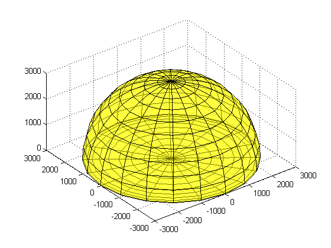
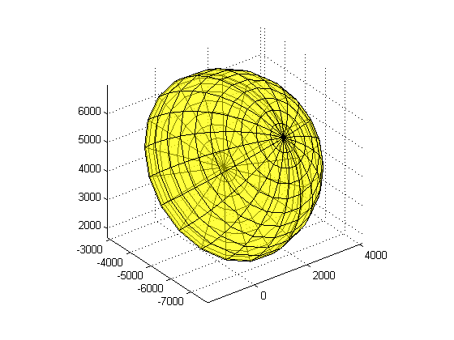
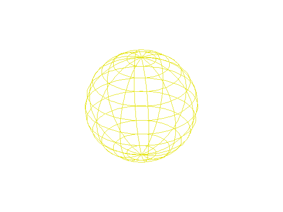
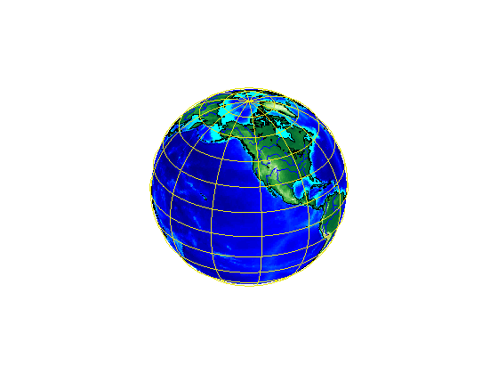
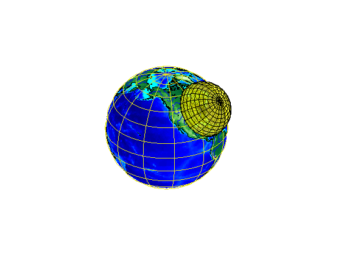

Plotting a 3-D Dome as a Mesh Over a Globe
This demo illustrates how to start with a 3-D feature in a system of local vertical coordinates, then transform and combine it with a globe display in Earth-Centered, Earth-Fixed (ECEF) coordinates.
Contents
Step 1: Set Defining Parameters
Use the Global Reference System of 1980 (GRS80) and work in units of kilometers. Place the origin of the local vertical system near Washington, DC, USA.
grs80 = almanac('earth','grs80','km'); domeRadius = 3000; % km domeLat = 39; % degrees domeLon = -77; % degrees domeAlt = 0; % km
Step 2: Construct the Dome in Local Vertical Coordinates
Local vertical is defined with respect to a geodetic reference point, specified in this case by (domeLat, domeLon, and domeAlt). It is a 3-D Cartesian system in which the positive x-axis is directed to the east, the positive y-axis is directed to the north, and the z-axis is normal to the reference ellipsoid and directed upward.
In this example, the 3-D feature is a hemisphere in the z >= 0 halfspace with a radius of 3000 kilometers. This hemisphere could enclose, hypothetically, the volume of space within range of a idealized radar system having uniform coverage from the horizon to the zenith, in all azimuths. Volumes of space such as this, when representing zones of effective surveillance coverage, are sometimes known informally as "radar domes."
A quick way to construct coordinate arrays outlining a closed hemispheric dome is to start with a unit sphere, scale up the radius, and collapse the lower hemisphere. It's easier to visualize if you make it semitransparent -- setting the FaceAlpha to 0.5 in this case.
[x,y,z] = sphere(20); xLV = domeRadius * x; yLV = domeRadius * y; zLV = domeRadius * z; zLV(zLV < 0) = 0; figure('Renderer','opengl') surf(xLV, yLV, zLV,'FaceColor','yellow','FaceAlpha',0.5) axis equal
Step 3: Convert Dome to the Earth-Centered Earth-Fixed (ECEF) System
Use function lv2ecef to convert the dome from local vertical to an ECEF system based on the GRS 80 reference ellipsoid, in one step. It applies a 3-D translation and rotation. Notice how the hemisphere becomes tilted and how its center moves thousands of kilometers from the origin.
[xECEF, yECEF, zECEF] = lv2ecef(xLV, yLV, zLV, ... domeLat * pi/180, domeLon * pi/180, domeAlt, grs80); surf(xECEF, yECEF, zECEF,'FaceColor','yellow','FaceAlpha',0.5) axis equal
Step 4: Construct a Globe Display
Construct a basic globe display using axesm and globe.
figure('Renderer','opengl') ax = axesm('globe','Geoid',grs80,'Grid','on', ... 'GLineWidth',1,'GLineStyle','-',... 'Gcolor',[0.9 0.9 0.1],'Galtitude',100); set(ax,'Position',[0 0 1 1]); axis equal off view(3)
Step 5: Add Various Global Map Data
Add low-resolution global topography, coastlines, and rivers to the globe.
load topo geoshow(topo,topolegend,'DisplayType','texturemap') demcmap(topo) land = shaperead('landareas','UseGeoCoords',true); plotm([land.Lat],[land.Lon],'Color','black') rivers = shaperead('worldrivers','UseGeoCoords',true); plotm([rivers.Lat],[rivers.Lon],'Color','blue')
Step 6: Add the Dome to the Globe Display
Add the ECEF version of dome to the globe axes as a semitransparent mesh.
surf(xECEF, yECEF, zECEF,'FaceColor','yellow','FaceAlpha',0.5)
You can view the dome and globe from different angles by interactively rotating the axes in the MATLAB® figure.
Credit
Thanks to Edward J. Mayhew, Jr. for providing technical background on "radar domes" and for bringing to our attention the problem of visualizing them with the Mapping Toolbox™.